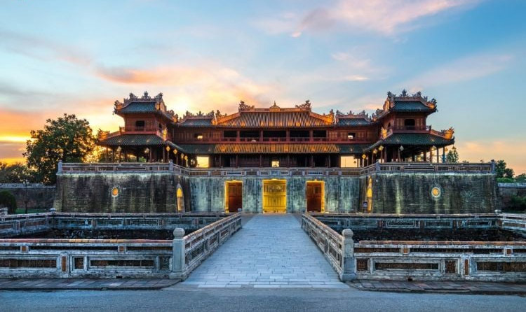

Huế có một lịch sử phong phú và là trung tâm văn hóa, chính trị quan trọng của Việt Nam qua các thời kỳ. Trong thời kỳ Triều đại Tây Sơn (1788–1801), Huế từng là căn cứ chiến lược quan trọng trong cuộc kháng chiến chống quân xâm lược. Tuy nhiên, khi triều Tây Sơn sụp đổ, Huế trở thành thủ đô của triều Nguyễn (1802–1945), dưới sự lãnh đạo của Gia Long, người sáng lập triều Nguyễn. Huế trở thành trung tâm chính trị, hành chính và văn hóa của Việt Nam trong gần 150 năm. Trong thời kỳ này, nhiều công trình kiến trúc lớn đã được xây dựng, nổi bật nhất là Đại Nội (cố đô Huế) nơi ở của các vua Nguyễn và trung tâm quyền lực của triều đình. Các lăng tẩm của các vua Nguyễn và hệ thống đền, miếu cũng được xây dựng tại đây. Đặc biệt, Quần thể di tích Cố đô Huế đã được UNESCO công nhận là Di sản Văn hóa Thế giới vào năm 1993, khẳng định tầm quan trọng của Huế trong lịch sử văn hóa Việt Nam.
